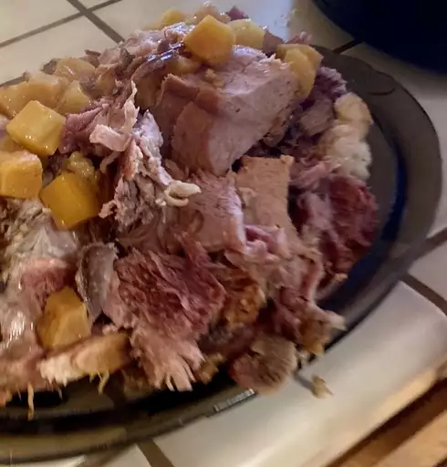

Ham Recipe
Ingredient
- 1 (5 pound) bone-in ham
- 1 (8 ounce) can pineapple chunks in juice
- ½ cup spicy brown mustard
- 2 ½ tablespoons honey, or more to taste
- 2 tablespoons minced garlic
Steps
- Place ham in a slow cooker.
- Mix pineapple chunks, mustard, honey, and garlic in a bowl. Spread over ham.
- Cook on Low until ham is easily shredded with 2 forks, 6 to 8 hours.